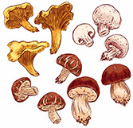
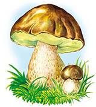

История происхождения грибов

На протяжении множества веков вопрос о времени появления грибов на нашей планете оставался открытым.
Существовало множество версий, некоторые из которых пытались объяснить появление грибов после различных природных явлений. Также бытовали две противоположные версии.
Сторонники одной считали грибы детьми богов, другие же называли их детьми самого дьявола. Однако после длительных споров грибы были отнесены учеными к классу растений. Со временем ученые пришли к выводу, что у грибов есть определенные отличия, свойственные и для животных. Кроме того, грибы в своем составе не имеют хлорофилла – пигмента, которые характерен для всех без исключения растений.
На современном этапе ученые пришли к выводу, что прародителями грибов были простейшие (одноклеточные), обитавшие когда-то в воде. Восхваление грибов характерно для начала нашей эры. В результате наличия в некоторых видах наркотических свойств, грибы, вызывающие галлюцинации, особо ценились древними индейцами. Когда люди пришли к тому, что съеденный гриб приводит к расслаблению организма и экстазу, они начали массово употреблять грибы, не думая о том, что их может настигнуть смерть от передозировки.
Более-менее детальное изучение грибов началось в эпоху Возрождения. В то время были изданы первые книги, в которых ученые пытались классифицировать разновидности грибов. В книгах даже применялись иллюстрации, показывающие точный внешний вид гриба.

Общая численность грибов на Земле находится около отметки в 100 тысяч видов.
Грибы находятся везде – не только на суше и в воде, но даже и в воздухе.
Занимаясь разложением всевозможных органических материалов, грибы исполняют серьезную роль в функционировании биосферы.
Человечество давно использует множество видов грибов, как в пищу, так и для различных медицинских и хозяйственных потребностей.
В данной энциклопедии мы постараемся подробно разобрать эти виды.